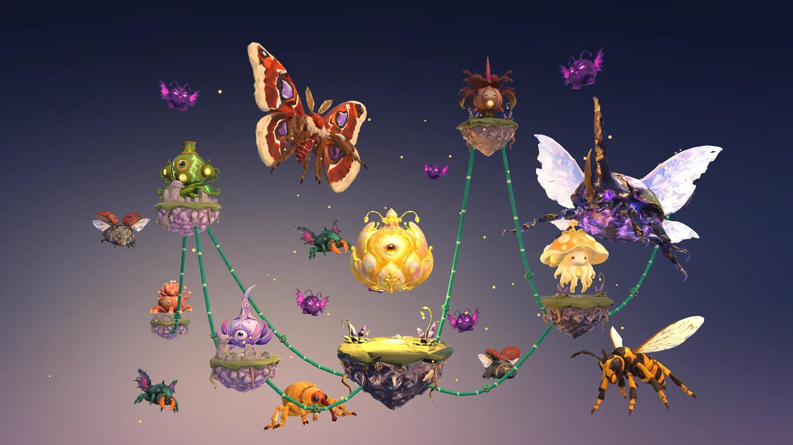
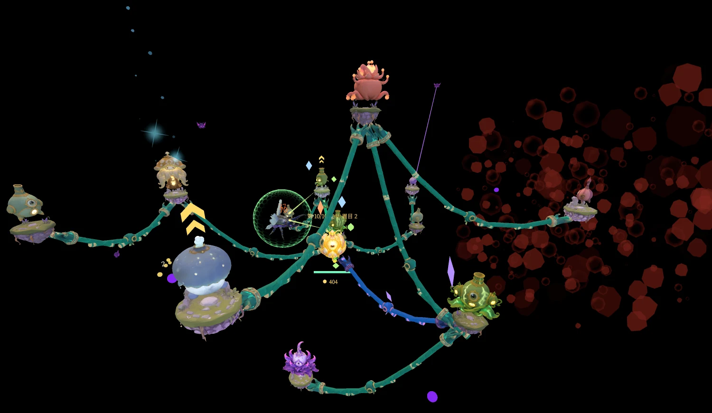
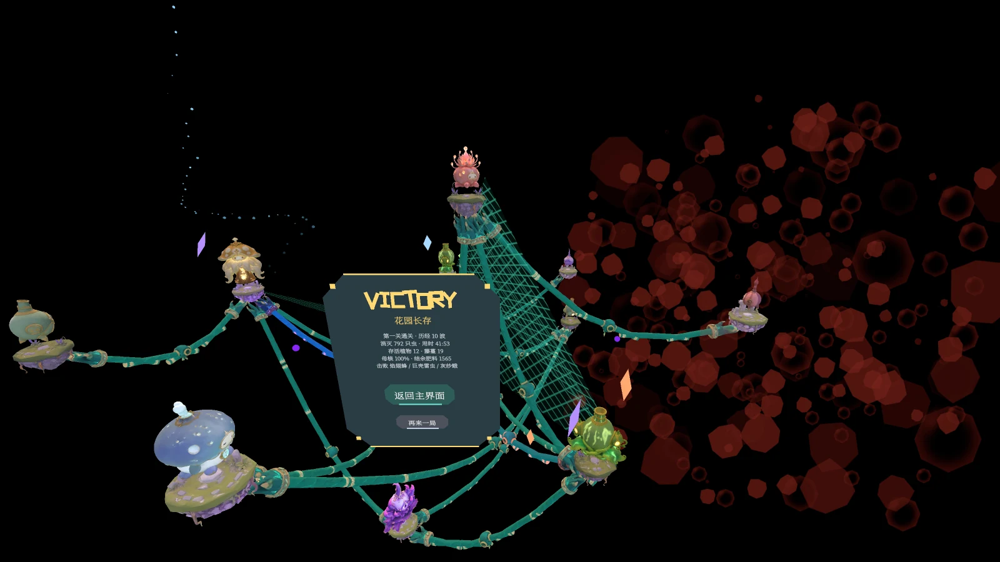
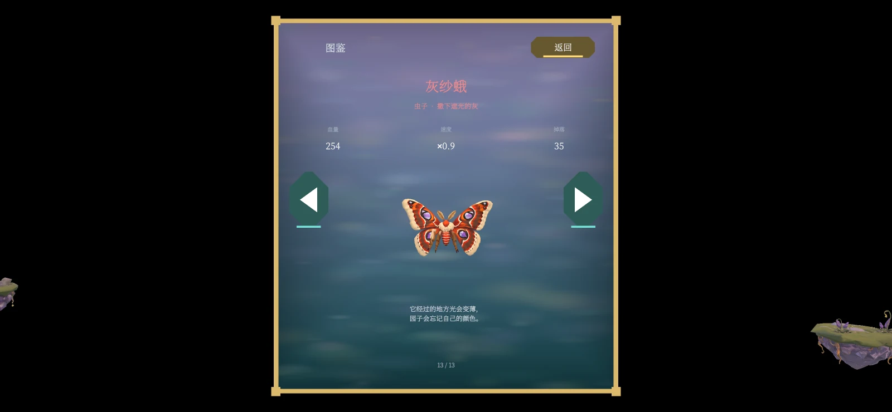
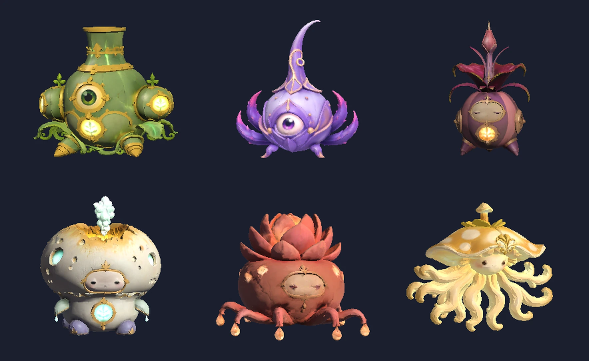
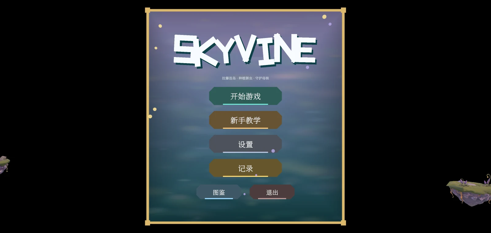

Skyvine
A tabletop AR tower-defense roguelike for AR glasses. A floating garden sits on your real desk; you plant, upgrade, and turn it with bare hands, because the side you cannot reach is the side under attack.
Project Overview
A garden hangs above the desk in front of you: a mother core at the centre, floating islands around it, vines linking island to island. Bugs come from the outer ring for the core and the vines. You plant defences on the islands, spread firepower along the vines, and survive wave after wave. Built solo on VITURE AR glasses — design, implementation, art integration, and on-device verification — and playable end to end: tutorial, a three-loop campaign, endless mode, and results.
The Question It Answers
Most XR demos verify whether one interaction works. Skyvine asks something else: can a genre that needs sustained decision-making, repeat play, progression and a difficulty curve actually hold up on glasses with nothing but hand tracking? That answer decides whether AR eyewear is a platform for five-minute experiences or for games people come back to. Three results: desk scale plus rotation adds a layer of real interaction that flat games do not have; bare hands can carry a full game, from planting to menu navigation; and the project became the team's demo base — two later projects were forked from its shared interaction kit.
The Core Loop, and Why It Rotates
Plant, upgrade, turn the garden. The garden sits on the desk in front of you: you can see all of it but you cannot reach the far side, so rotating it to bring a new face forward becomes a core action rather than a camera control. That move does not exist in a flat game — it is the part of the design that is AR-native rather than a mobile game moved into glasses. Each run varies through the plant mix and upgrade path.
Three Loops of Ten Waves
Wave strength grows quadratically after wave 5 — that curve is what gives endless mode its "you will eventually lose" feel — and wave 30 carries roughly seventeen times the health of wave 10, which is unbeatable by design. So the campaign replays a well-tuned ten-wave curve three times, with difficulty supplied by a loop multiplier instead. The player keeps everything: plants, vines, upgrades, core health. Only the wave counter resets, which is the entire difference between a second loop and starting over. Each tenth wave spawns one of four bosses, drawn once at the start of a run so a mid-run save restores without re-rolling.
Design Decisions
Bosses attack your output, not your core. Regular bugs go for the core and the vines; three of the bosses instead destroy your ability to intercept — pinning firepower, draining a single plant dry, sealing off a region with fog. The risk is that players simply ignore them, so the countermeasure is visible causality: when a boss appears you must see your firepower weaken and the bugs closing in at the same time.
Bosses rotate with the garden; small enemies do not. The criterion is not consistency but whether the attack is anchored to the garden. A beam planted on a plant, a hover position at firing range, a vortex sealing off a radius — if those do not follow the rotation they slip off target or slide across the garden, and the player cannot predict them. Small enemies live in world space, so rotation leaves them alone.
Build the boss lab before touching the main scene. Boss readability — scale, brightness, speed — takes many rounds on the device, and running a full game loop for each round is too slow and risks mixing half-finished work into the main scene. The cost is maintaining a parallel set of lab scripts.
Localization skeleton first, tutorial second. The tutorial added roughly forty strings. Done the other way round they would have been written in Chinese and then retrofitted with keys; done in this order the tutorial was bilingual from its first line, with zero rework.
Technical Problems Worth Naming
CJK text inside XR. Three separate failures, found in order: blurry Chinese glyphs (atlas precision), Chinese that would not go bold (missing weight), and runtime-composed damage numbers rendering as boxes (the subset atlas had dropped digits and symbols). Fixed by forcing a digit-and-symbol baseline into the font exporter, migrating all text from legacy TextMesh to TMP, and building Noto Serif subsets per language — a full CJK font would have cost unacceptable package size and video memory.
Where to anchor the pointer. The menu cursor was rebound three times: index fingertip (jitters, and sinks on pinch), head gaze (stable but unnatural), and finally the metacarpophalangeal joint, which is both stable and intuitive. That result was found on the device, not designed at a desk.
Polygon budget. Boss models are cut to 15k triangles on intake, monitored by an in-house poly-audit tool. AR scenes do not allow "finish it and optimise later" — going over budget drops frames immediately.
Spatial correctness. A rotatable garden creates its own bug class: any effect anchored to the garden that does not follow the rotation ends up misplaced. Every new effect has to declare, up front, whether it belongs in world space or under the content root.
Process and Verification
Gameplay logic lives in its own assembly with no dependency on Unity scene objects, so rules and numbers can be covered by EditMode tests instead of hand-checked in Play Mode. Development ran Research → Plan → Implement throughout: research first, then a line-by-line reviewable plan document, then code — four such plan documents are the record of it, and they doubled as handover material. External playtest feedback landed as concrete changes: range previews removed, the tutorial extended to explain the incoming-wave dotted line, and that line immediately followed by a telegraphed double-size wave.
Gallery
Captured from the PC build running the on-device layout. The AR composites and the hand-gesture shots are still pending.





